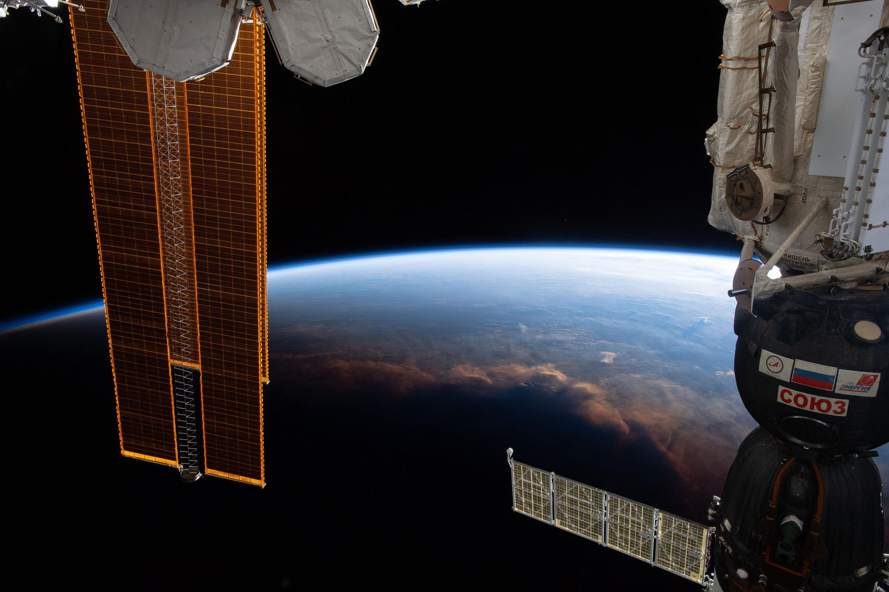
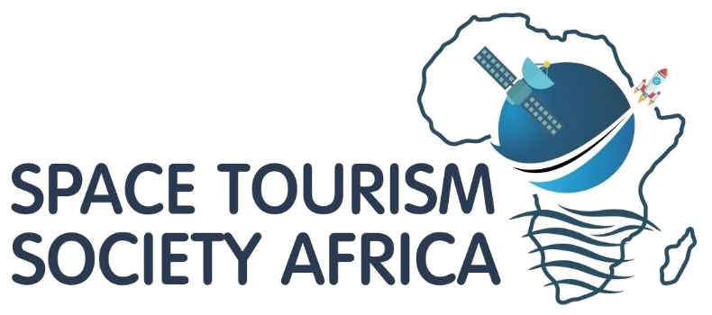
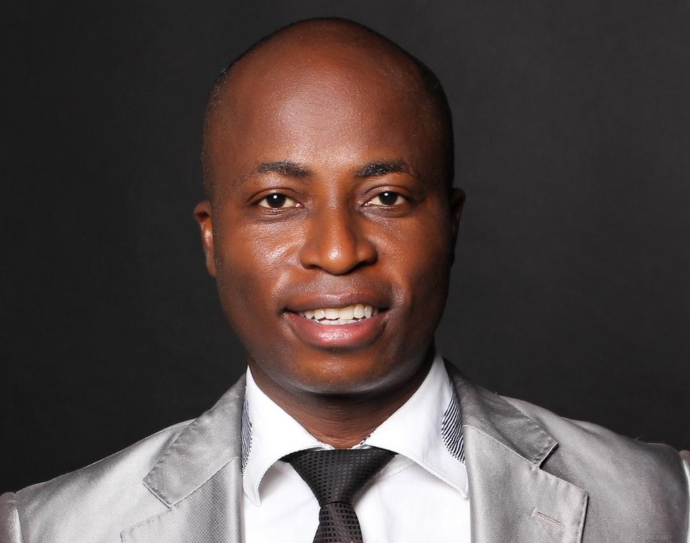
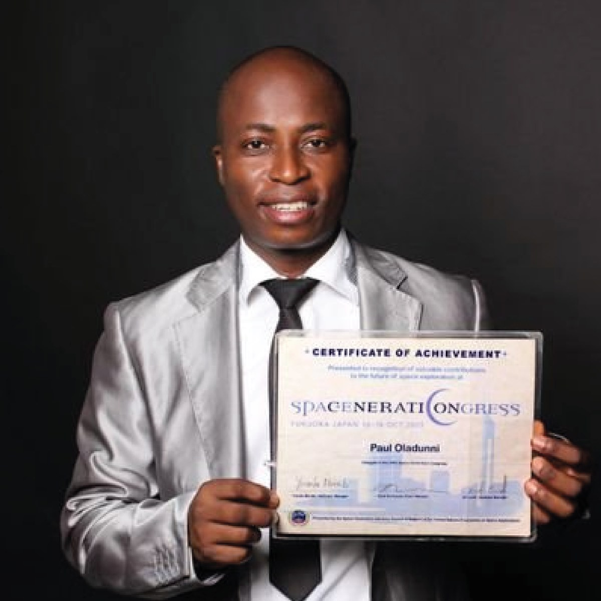
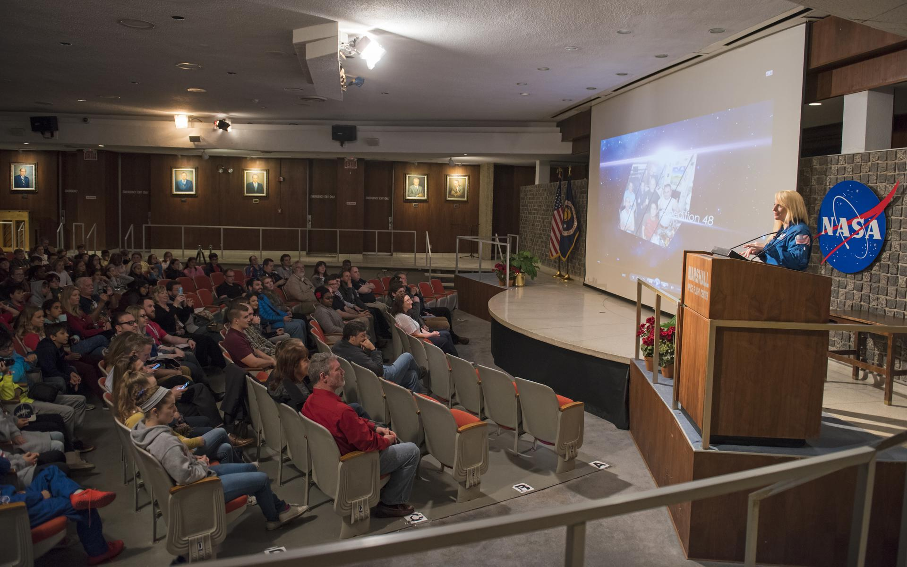
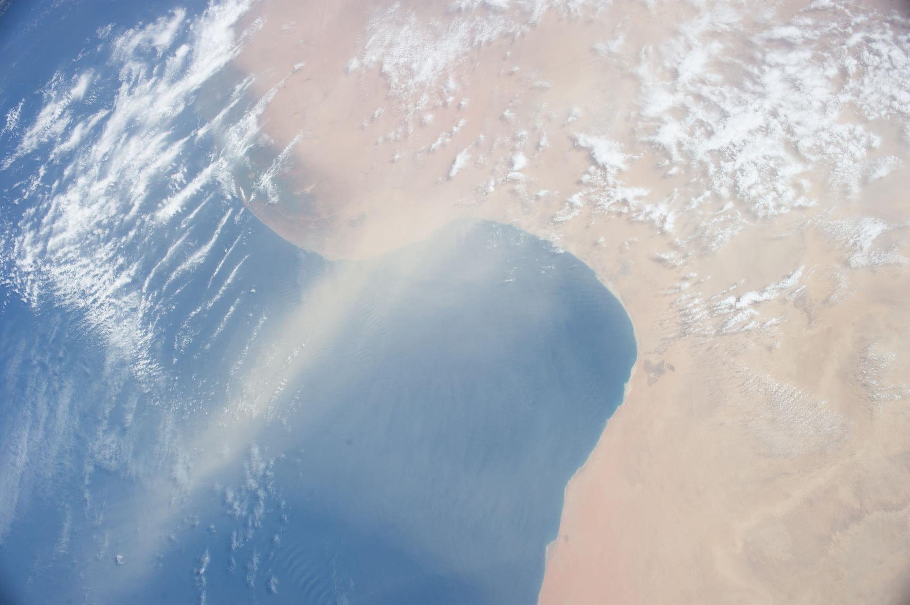
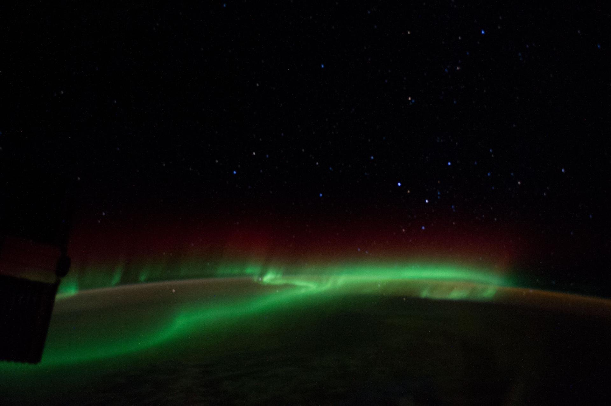
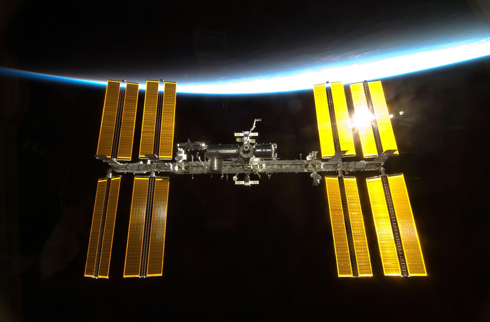

2003
Nigeria
First University Space & S.T.E.A.M. Platform Launched
Grassroots campus space club movement founded to engage Nigerian undergraduates across science, engineering, arts, and social sciences.

7.3775° N, 3.9470° E · Regional Headquarters, Ibadan
Affiliated with the Space Tourism Society in Los Angeles and supervised in partnership with NASRDA’s Centre for Atmospheric Research, we connect African university students, researchers, and private industry to global space missions since 2003.
Institutional Mandate

Space Tourism Society Africa (STSA) is the continental platform advancing space science, satellite applications, and commercial space travel through Science, Technology, Engineering, Arts, and Mathematics (S.T.E.A.M.) among university students, young professionals, and private-sector leaders.
Africa is no stranger to civilian spaceflight—South African entrepreneur Mark Shuttleworth flew aboard Soyuz TM-34 in April 2002 as the world’s second self-funded space tourist, and more than twenty African nations now operate satellite and space research programmes. STSA works to ensure African institutions participate directly in the global orbital economy as contributors, researchers, and investors rather than spectators.
Building student chapters across African universities to train young scientists, engineers, communicators, and non-space discipline undergraduates regardless of nationality, gender, or background.
Placing university members inside national space research centers, aviation bodies, and multinational aerospace organizations for practical career mentorship while still in school.
Collaborating with NASRDA activity centers, embassies, airlines, travel agencies (NANTA), and corporate executives in support of national space agencies and the African Space Agency framework.
Organizing delegations to U.S. Space Camp, the International Astronautical Congress, JAXA, and European internships designed to equip African talent globally while rooting careers locally.


Leadership & Origins
Founded and led by Paul Olanrewaju Oladunni—widely known across Nigeria’s science and travel sectors as Mr. Space—Space Tourism Society Africa grew out of one of Nigeria’s earliest student space clubs established in the early 2000s. An alumnus of Wesley College of Science and Obafemi Awolowo University, Ile-Ife, Oladunni represented Africa as an undergraduate at the 2005 Space Generation Congress in Fukuoka, Japan, and in 2008 became the first African youth invited to the SES ASTRA AMERICOM satellite conference.
In 2012, working through Space Media Technologies Limited, he formally chartered the Space Tourism Society Nigeria Chapter under STS Headquarters in Los Angeles. Over the following decade, the society partnered with Afe Babalola University on Yuri’s Night 2013—drawing more than 1,000 students and championing the concept for the largest planetarium in Africa—led Lead City University delegations to the 2021 International Astronautical Congress in Dubai, and built cross-border space tourism partnerships with the National Association of Nigeria Travel Agencies (NANTA).
Between late January and early February 2026, STSA became the first African platform to sponsor both a society member and a university Deputy Vice Chancellor to complete the U.S. Space Camp Adult Program in Huntsville, Alabama, earning a 2026 Influencer Magazine Awards (UK) nomination for advancing Africa’s entry into global space travel.
Nigeria’s first dedicated space radio broadcast, airing continuously from Ibadan since June 2016. Early guests included Dr. Temidayo Isaiah Oniosun, former President of the Space Club of Nigeria and founder of industry research firm Space in Africa.
Charter Activities

Sponsored delegations for students, faculty, and university executives to Huntsville (Alabama), STS International Headquarters events in California and Colorado, and late-2026 educational visits to the Japan Aerospace Exploration Agency (JAXA).
Guided study tours beginning at domestic centers—such as NASRDA’s Center for Space Transport and Propulsion (Epe, Lagos) and Centre for Atmospheric Research—and extending across Benin, Togo, and Ghana.
Structured placements across European space institutions starting in 2027, giving African students hands-on aerospace experience with structured pathways to build careers back home.

University conferences, bilateral embassy forums, and International Space Week programming co-hosted with partners including Lead City University, Afe Babalola University, and Nile University Abuja.
Hands-on student training on optical telescopes, satellite DTH receivers, and atmospheric instrumentation in partnership with NASRDA’s Centre for Atmospheric Research (CAR).
Inter-university design challenges and student research projects prepared for international exhibition at the International Astronautical Congress (IAC) and Space Renaissance forums.

Public stargazing evenings, secondary school STEM talks, sidewalk astronomy, and astronomy outreach across underserved communities and IDP camps in partnership with IAU initiatives.
High-attendance campus cultural events including The Space Party, Mr. and Miss Space Tourism Society across African university chapters, and the Annual Dinner & Space Awards.
Weekly public education on Lead City 89.1 FM demystifying satellite technology, space medicine, aviation hospitality, and commercial spaceflight for everyday listeners.

Working alongside the National Association of Nigeria Travel Agencies (NANTA) since 2024 on cross-border West African tours, embassy space dialogues in Abuja, and NANTA’s 50th AGM in Ibadan.
Curated international executive retreats—such as the July 2026 one-week Ghana executive retreat facilitated for AIICO Insurance leadership—linking corporate strategy with frontier technology.
Bilateral collaborations with foreign missions (including the Embassy of the Czech Republic in Abuja) and carrier discussions to expand African access to global space congresses.
Verified Record
Grassroots campus space club movement founded to engage Nigerian undergraduates across science, engineering, arts, and social sciences.
Founder Paul Olanrewaju Oladunni represents Africa at both the Space Generation Congress (Oct 14–16, 2005) and the 56th IAC in Fukuoka.
Invited as the first African youth delegate, catalyzing STSA’s long-term focus on Direct-to-Home (DTH) satellite broadcasting and connectivity across Africa.
Formal affiliation with Space Tourism Society (Los Angeles); co-hosted Yuri’s Night 2013 at Afe Babalola University—championing Africa’s largest planetarium concept—followed by campus outreach at Ajayi Crowther University.
First radio broadcast in Nigeria dedicated to space science and commercial spaceflight launches on June 24, 2016 on Lead City University 89.1 FM.
STSA leads students and management staff from Lead City University, Ibadan to represent Nigeria at IAC 2021 in Dubai.
Hosted Nigerian school, space center, and community outreach linked to the 2024 International Astronomical Union General Assembly, and signed a travel-sector partnership with NANTA leading to an engagement mission in Ghana.
Led NANTA delegates to the Embassy of the Czech Republic in Abuja during World Space Week (Oct 5–9) and organized a December educational tour across Benin, Togo, and Ghana.
First African platform to sponsor a member and a university Deputy Vice Chancellor to the Space Camp Adult Program in Huntsville, Alabama (Jan–Feb 2026); logistics partner for NANTA’s 50th AGM in Ibadan (April); facilitated AIICO Insurance executive retreat in Ghana (July 15–21).
Coordinating 2026 International Space Week with Nile University, a Nigerian student study tour to Japan’s JAXA before end of 2026, and the 2027 European internship initiative for African university students.
Regional Secretariat
Universities, national space agencies, corporate partners, and prospective student members may contact the Regional Secretariat directly in Ibadan or Lagos.
I/C Faculty of Basic and Medical Sciences, Lead City University, Lagos–Ibadan Toll Gate, Ibadan, Oyo State, Nigeria.
God’s Heritage Building, Beside Gionee Office, Mokola Roundabout, Ibadan, Oyo State, Nigeria.
3 Adegbola Street, Anifowose, Ikeja, Lagos State, Nigeria.
Tel: +234 706 368 3222 · +234 805 110 9855
Secretariat: stsregionalpresident@carnasrda.com
Media & Tours: spacemediatechnologies@yahoo.com
Open to university students, researchers, secondary schools, travel professionals, and institutional partners across Africa.
Click below to send your completed application directly via your email client to stsregionalpresident@carnasrda.com, or copy/download a copy for your records.